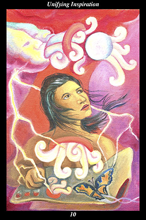

 | IMAGEA female warrior gazes at the moon and paints what she experiences. In the sky, ancient creative forces sing of perfection and the moon echoes their song. Lightning falls from the sky, providing the warrior with the creative energy to paint her vision. The warrior’s heart opens and echoes the song of perfection, too. On her paper made of precious tree bark, she paints of the song she hears and of the butterfly of transformation she feels. |
INTERPRETATION
This hexagram represents a vision of the wondrous aspirations that can arise from shared experiences. The female warrior symbolizes the way of nurturing and encouraging human nature that increases its sensitivity and loving-kindness. That she paints the moon the way she sees it means that you contemplate the ways in which nature transforms itself and that you give them expression in your life. The moon echoing the song of the creative spirits means that you learn the ways of the unseen forces and make them your own. Painting with lightning means that you give voice to the perfecting power which runs like a thread of continuity from the past, through the present, and to the future. Opening her heart to the song of the unseen forces means that you see into the essence of the world and rejoice in the perfection you perceive underlying the surface of appearances. The warrior’s painting is heartfelt but modest, meaning that even our best efforts are incapable of fully capturing the power, scope, and grandeur of our vision. Taken together, these symbols mean that even in an experience as universal as gazing at the moon, you see into its essence and translate its meaning in ways that draw others together in a vision of the true significance and potential of the whole to which they belong.
ACTION
The feminine half of the spirit warrior reawakens the masculine half to the beauty, joy, and truth to be found in sharing
benefit. Fulfillment is not an intellectual state devoid of emotional conscience or social communion—it is, rather, a state of multiplying
benefit that strives to overflow its vessel in order to enrich other vessels. So powerful is its sense of purpose that
benefit will eventually withdraw from those who do not use it to fulfill others. The need here is for a sense of purpose itself, for those who are themselves misguided try to guide others and all concerned suffer from the leadership’s lack of perspective, compassion, and foresight. The heart must be filled with a vision of the great endeavor, whose collective purpose explains past events and actions, increases tolerance and understanding among contemporaries, and prepares meaningful responses to future events. People can sacrifice personal fulfillment indefinitely only if they feel themselves contributing to the fulfillment of something greater than themselves. For this reason, meaningless work in exchange for personal material security cannot hold people enthralled very long—nor can threats of losing such meaningless security force compliance in the long run. This is the time for a positive vision of unity that inspires people to set aside past conflicts, accept and respect one another’s potential, and work together toward a goal that ennobles the lives of all concerned. Only when people feel that all partake equally from the pool of resources do they willingly take up as much of the great burden as they can carry. Open your heart to the divine purpose of human life and your vision will be like a torch for others seeking to perfect their part of creation.
INTENT
All those who have ever lived have gazed upon the moon, their dreams and memories and knowledge reflected forever in that mirror of the unseen forces. All those who have ever lived have bathed in the light of the moon, purified by the ancestors’ expression of a life in harmony with the world of nature and spirit. Every time the spirit warrior returns to the world, the moon awaits to inspire both the feminine half with an inner calendar for renewing the cycles of creation and the masculine half with an inner light for exploring the infinite night of the unknown. Drawing this hexagram, be grateful you can hear the song of the creative forces, that you can hear the language of creation: let what you hear echo in your own heart, dialog with it, and let it echo back out in your own thoughts, feelings, words, and actions.
SUMMARY
Do not lose faith in your original vision of truth and beauty and love. Hold to the eternal ideals of the human spirit, continuing to give expression to them in all facets of your life. Your sincerity and persistence in defiance of the odds bring you into contact with a growing number of like-minded warriors. Work hard to keep your alliance open to all who share your vision of unification.
THE LINE CHANGES
1° When people are starting over, it is difficult not to feel desperate and needy. However, you have enough at your disposal to make it through this transition time. Become more self-sufficient, overcoming your insecurity and anger, before entering into any new partnerships.
2° Do not make your quest for security so important that it overshadows all other facets of your life. Those around you long to bask in the warmth of your light-hearted nature. You cannot prepare for every eventuality but you can make every moment count—fall back on your inner resources.
3° When people exaggerate their capabilities and aptitudes, they find themselves in positions beyond their capacity. What appears at first to be a dream-come-true turns into a nightmare. Represent yourself ethically and all will be well—do not, and you harm your reputation for future endeavors.
4° When people join together to fulfill a shared vision, their excitement and enthusiasm are palpable. Use the authorization from above to keep everyone motivated and focused on the long-range goal. Only if your resourcefulness results in a finished project will your efforts be judged a success.
5° Do not let your impulses get the better of you—this is a time for being practical and prudent, not a time to overextend yourself. You have outgrown this old habit of seeking something new to calm an underlying uneasiness. Set aside comforts and make frugality part of your spiritual practice.
6° When people are short-sighted and pursue unearned gain, they deplete their resources and call down hardship upon themselves. When a lack of resourcefulness goes to an extreme, adjustments must follow that balance the scales. Even if the flood is not your fault, you get swept up in it.